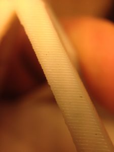
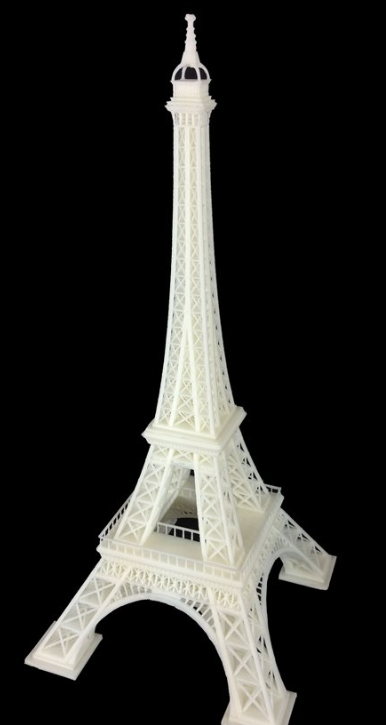

Software Settings Feb 25, 2018
Much as hardware engineers don’t want to believe it, Larry Ellison wasn’t wrong when he said that modern hardware is 90% software. Small modifications to software settings contributed major improvements to print quality, speed, and reliability. While the prevailing sentiment in 2012 was that settings had to be different for every print, and that true optimization was impossible, we found that through experimentation we could greatly improve our printer’s performance across the board.
FDM printers are inherently slow, being vector based, and when we started, conventional wisdom was that good print quality couldn’t be obtained at speeds past 35 mm/second.
Although maximum speed was obviously dependent on the structural rigidty of the machine, the specific mechanism by which print speed limited quality was by the creation of what we called wobble artificats. As the nozzle turned external corners, it would wobble slightly from its turn, like the needle of a seismograph. The result would appear as a pattern of vertical lines radiating out from corners. We discovered that by reducing both the speed and acceleration of the outer perimeters to extremely conservative values, we could completely eliminate wobble artifacts. The entire rest of the print could then proceed at very high speed, limited only by the mechanical integrity of the printer and the output capacity of the extruder. With our new printhead and solid V-slot based frame, we could thus do the vast majority of our printing at a speed of 150 mm/s. Even accounting for somewhat conservative acceleration settings that our large, heavy bed, and large, heavy dual extruder printhead forced upon us, this speed improvement bought a 2-3x improvement on the competition.
FDM printers are surprisingly capable of printing overhangs, but only if good cooling is used. In the time between the deposition of plastic and its full hardening, overhanging features tend drift somewhat. Poorly supported features tend to sag, while subtle overhangs often warp upward. In the latter case, the extruder will often hit the protruding plastic, knocking the print off the bed. Judicious control of extrusion temperature and cooling fan settings bought us massive improvements in bridging and overhang performance, extending what we could achieve without soluble support, and minimizing its use where it was necessary.
Another major genre of complaints about FDM print quality has to do with a number of extruder-related issues. The most obvious is stringing. When the extruder finishes filling in one region of a layer and moves to another, extrusion often does not stop neatly, causing the extruder to leave a small, spiderweb-like fibers tracing the path of its movement. Though the bulk of the webbing can easily be removed, the stubs remain behind, to the considerable detriment of print quality.
The obvious and universally implemented solution to stringing is to retract the filament somewhat before a crossing move, creating a momentary negative pressure in the extruder and thus stopping the extrusion. However, this usually minimizes rather than eliminates the problem, and frequently causes the extruder to ingest air bubbles. If these are expelled when the extruder is printing a perimeter, they create visible imperfections. We had good luck with small, jerky retracts, compared to the great slow yanks used by others. Further improvements were made by having the extruder wipe itself across the region it had finished printing. Coupled with a number of improvements to the printhead, we were able to almost entirely eliminate the stringing problem.